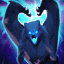
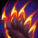

THE RELENTLESS STORM
Volibear's Attacks and abilities grant Attack Speed, and eventually cause his Attacks to deal bonus magic damage to nearby enemies.
THUNDERING SMASH
Volibear gains speed towards enemies, Stunning and damaging the first one he Attacks.
FRENZIED MAUL
Volibear damages an enemy, applying on-hit effects and marking them.
Casting this ability again on the same target deals bonus damage and Heals Volibear.
SKY SPLITTER
Volibear summons a lightning bolt at a location, dealing damage and Slowing enemies while granting Volibear a Shield if he's inside the blast radius.
STORMBRINGER
Volibear leaps to a target location, Slowing and damaging enemies beneath him while gaining bonus Health.
Enemy towers near his landing location become temporarily disabled.